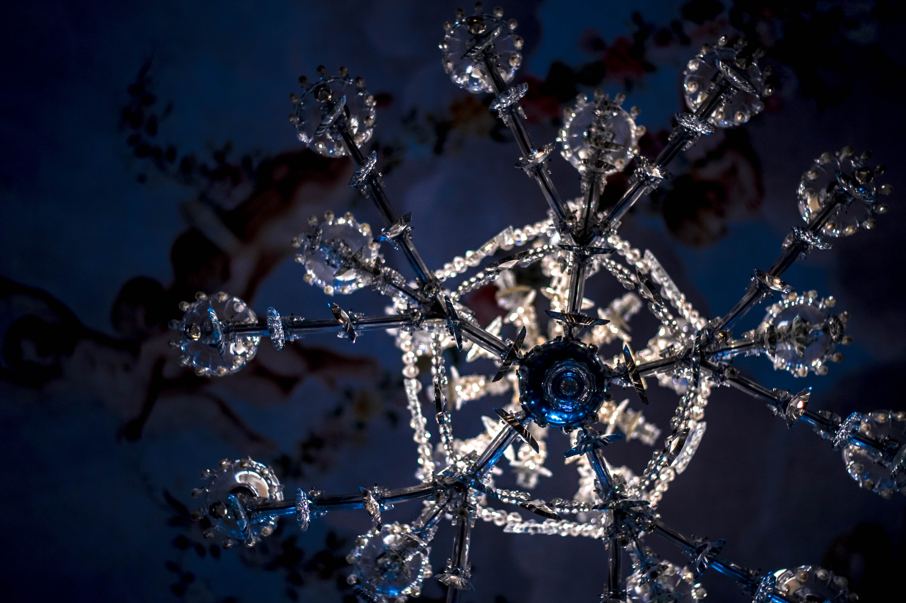

Körübelül két éve kezdtem el viszonylag komolyabban foglalkozni a fotózással, mikor sikerült megvásárolnom az első tükörreflexes fényképezőgépem. Egy Canon 1300D-t amit az első hónapokban a kit lencsével használtam. Ez egy belépő szintű gép, egy alap objektívvel. Később bővült a a "család" egy portré és egy zoom objektívvel is. A fotózás sokszor megmutatja hogy milyen jó a dolgokat más szemszögből is megfigyelni. Kedvenc témáim a portrék, a tájfotózás és az életpillanatok. Amatőr vagyok még nagyon, de igyekszem fejlődni. Mindig van hova.
